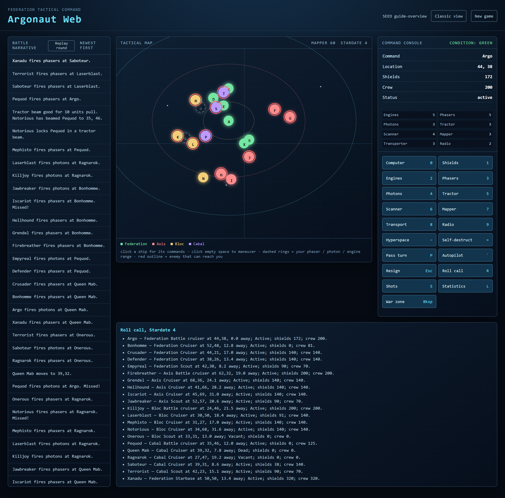
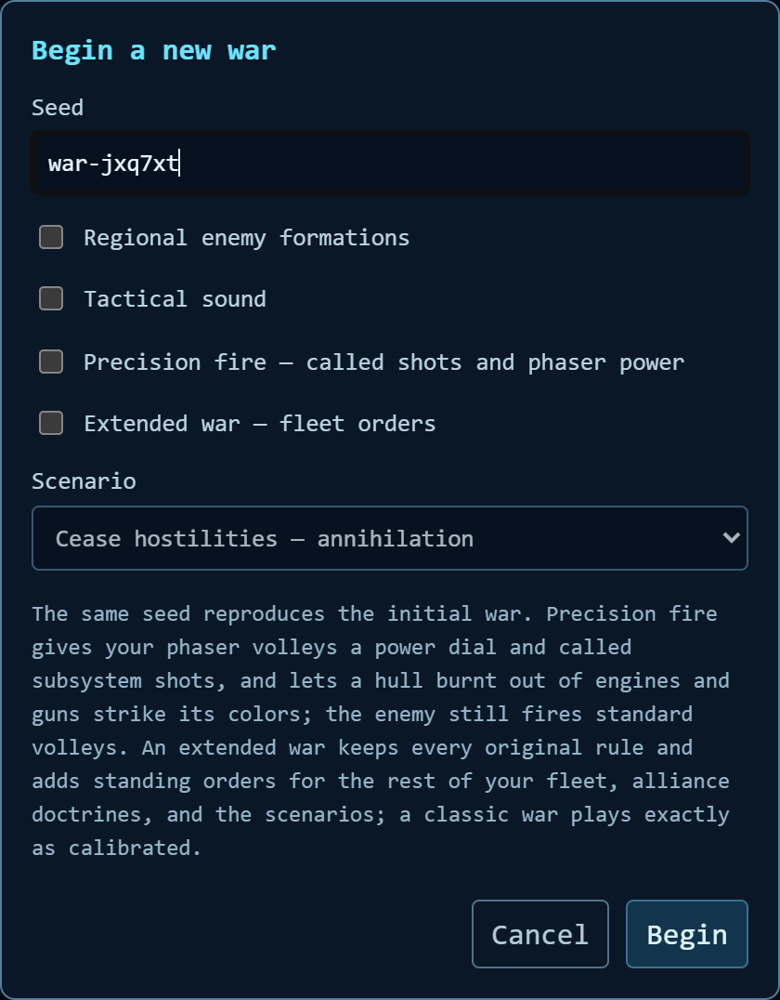
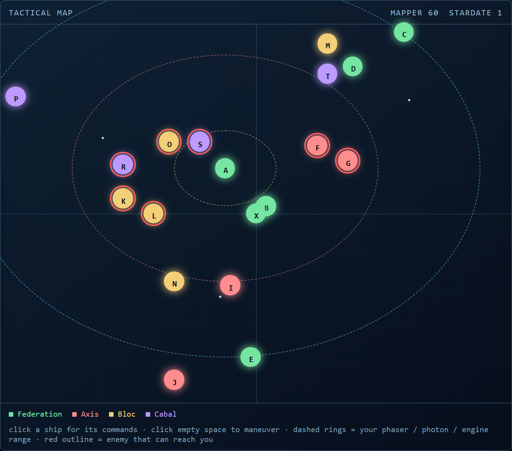
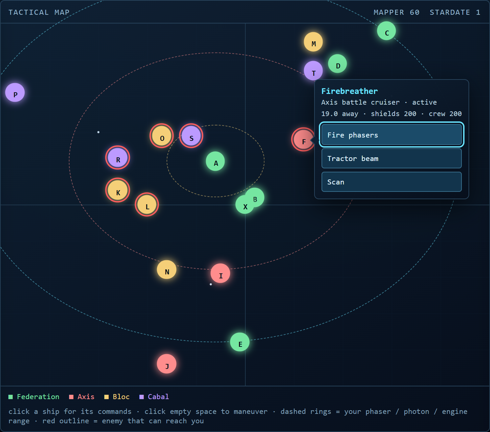
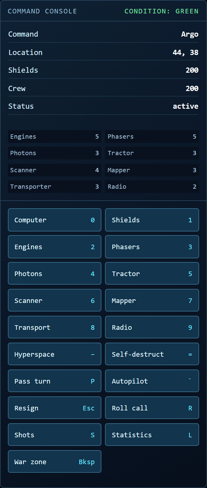
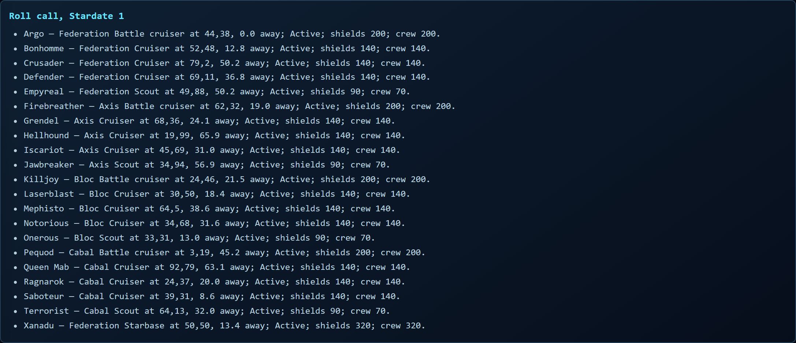
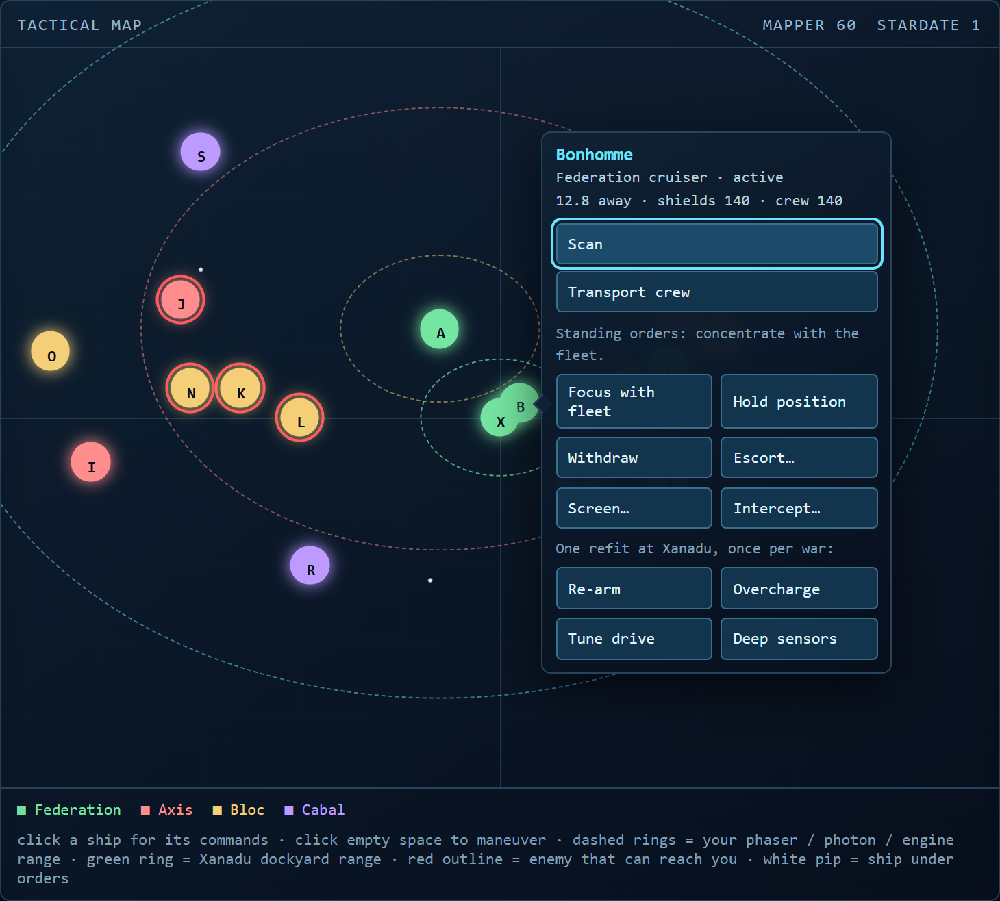
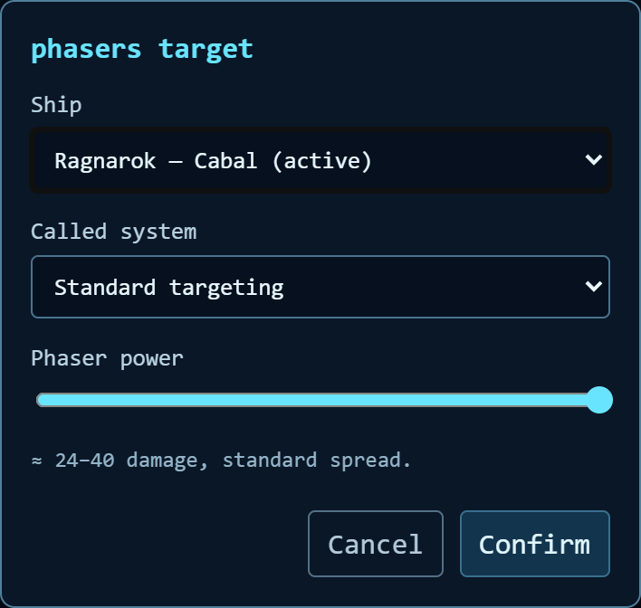
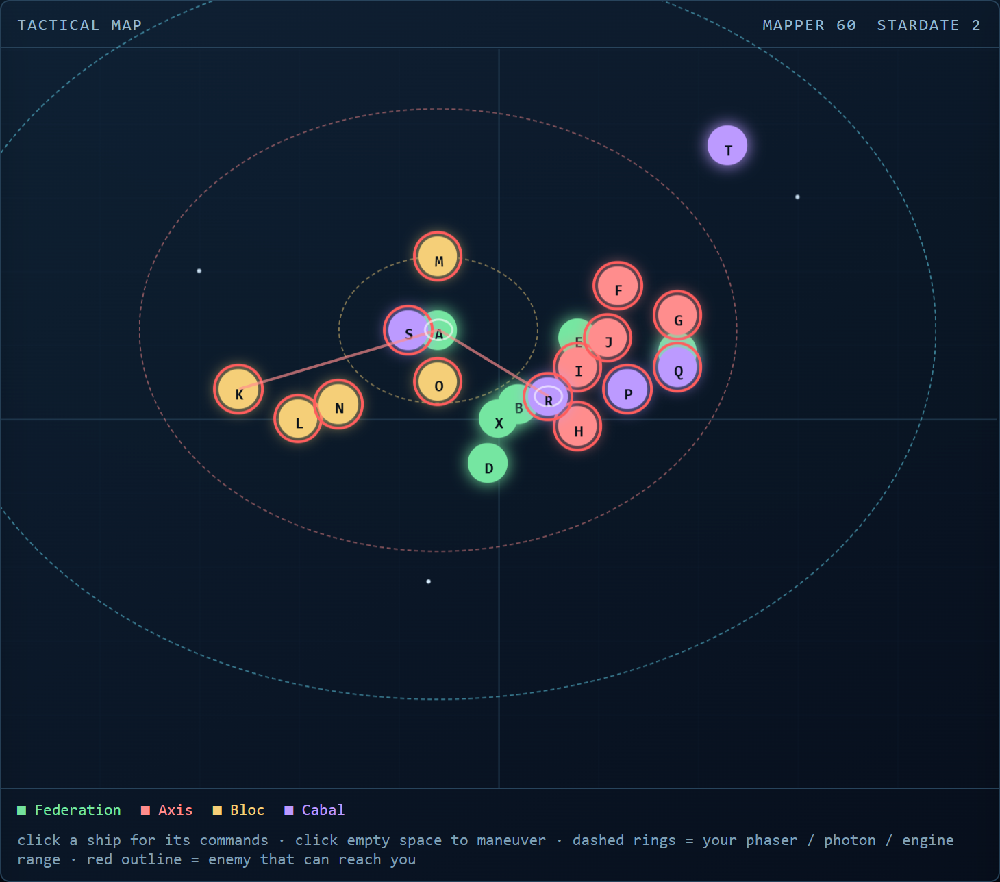
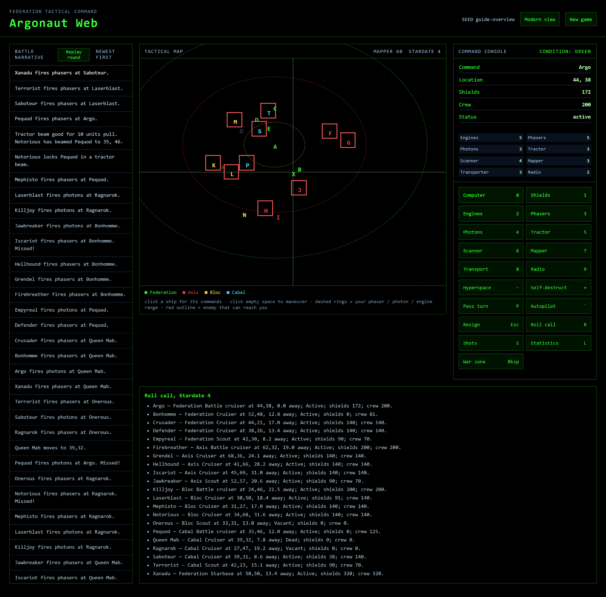

The war at a glance
Argonaut Web is a turn-based fleet battle in deep space. You command the Federation flagship Argo — and through it the whole Federation — against three enemy alliances. Every stardate you issue one command; then every other captain in the war zone acts at once. The war ends when one side is annihilated, when every survivor is stranded beyond reach of anything, or when you resign and let the autopilots finish what you started.
- Four alliances field five hulls each — a battle cruiser, three cruisers, and a scout — plus the Federation starbase Xanadu, which fights at your side.
- One command spends one stardate. Information commands, fleet orders, and refits are free.
- The war autosaves after every action; reload the page and resume where you left off.
- The seed shown in the top bar fixes the opening disposition. Same seed, same war.

Federation tactical command: the battle narrative (left) logs every action newest-first, the tactical map (centre) is where the war is fought, and the command console (right) carries your ship's condition and every command.
Starting a war
New game in the top bar opens the war panel. Name a seed or take the one offered; tick the options you want. A classic war with every box unticked plays exactly by the original 1992 rules — the flags only add.
- Regional enemy formations starts the enemy fleets clustered by alliance instead of scattered.
- Tactical sound adds phaser, photon, explosion, and miss effects, plus a klaxon on the way into RED alert.
- Precision fire gives your phaser volleys a power dial and called subsystem shots.
- Extended war adds standing orders for your fleet, alliance doctrines, the Xanadu dockyard, and three scenarios.
- Argonaut Reimagined is an expansion mode under active development — it carries the extended war and adds a wider 240-unit battlefield with a pan/zoom camera, reactor power management, the directed tractor beam, and a living battlefield of nebulae, asteroid fields, and ion storms. See Argonaut Reimagined below. A classic or extended war is untouched.

The war panel. The scenario picker only comes alive in an extended war.
Reading the tactical map
- Every hull is a circle bearing its initial, coloured by alliance; a wreck is a +. A dashed border means vacant or surrendered.
- Dashed rings around your ship mark phaser (red), photon (yellow), and engine (cyan) reach. In an extended war the green ring around Xanadu is the dockyard.
- A red outline marks an enemy that can reach you this stardate.
- The map is limited by your mapper — fog of war. Backspace shows the whole war zone; 7 lists exact local positions.
- Click empty space to steer your ship toward that point, clamped to your engine ring. Click a hull for its context menu: every command your ship can actually perform on it, and nothing else. Escape puts the menu away.

A skirmish taking shape: enemies outlined in red can reach you; your own rings show what you can reach.

The context menu grows out of the hull you clicked and only offers commands whose hardware works and whose range reaches.
Commands and keys
Every command has a console button and a key. The numbered commands spend your stardate; the information commands at the bottom are free and print into the mission panel.
| 1 Shields | Flush engine power into shields. Needs working engines. |
| 2 Engines | Maneuver by exact ΔX / ΔY, or click the map instead. |
| 3 Phasers | Energy volley at a hull in range; scales with live phaser units. |
| 4 Photons | Torpedo at close range; heavier damage, smaller reach. |
| 5 Tractor | Lock a beam and drag the target toward you. |
| 6 Scanner | Scan a hull. In an extended war, reveals who captains it. |
| 8 Transport | Beam crew to a friendly hull — or board a vacant one. |
| - Hyperspace | Blind jump to a random point, shields weakened on arrival. Shakes off a tractor lock; can burn the ship up. |
| = Self-destruct | Destroys everything in blast radius, shrapnel beyond. Xanadu's blast is especially large. |
| P / Tab Pass | Hold position and end the stardate. |
| ` Autopilot | Your ship fights one turn like an enemy captain — ruthless, but clumsy. |
| Esc Resign | Hand the whole Federation to the autopilot and watch the war play out. Final. |
| 0 Computer | Free: the computer's read on the war. |
| 7 Mapper · 9 Radio | Free: exact local positions; radio traffic report. |
| R · S · L · Bksp | Free: roll call, shot distribution, alliance statistics, full war-zone map. |
| F Fleet | Extended war only: your fleet and its standing orders. |
Hyperspace, self-destruct, and resign ask for confirmation first — none of them can be undone. While any dialog is open it owns the keyboard, so game keys never fire behind a prompt.

The command console: your hull's condition and subsystem units above, every command and its key below.

The mission panel carries the free information reports — here the roll call of every hull in the war.
Combat and survival
- Battles are attritional. Hulls carry double the shields and crew the gunnery table was tuned against: a kill takes some fourteen volleys, a war about twenty-five stardates. The guns themselves are unchanged from the original.
- Shots miss — yours and the enemy's alike — and every volley rolls its own damage band.
- Damage past your shields knocks out subsystems, shortening scanner, mapper, transporter, and radio reach. Lose all crew and the hull sits vacant, boardable by your transporter — command included.
- Tractor locks pull both ways and end only when the holding ship dies; hyperspace also shakes one off.
- Two hulls on the same point collide: one is destroyed, the other crippled. This applies to your moves, the autopilots', tractor tows, and hyperspace arrivals.
- Lose your command ship or resign and command shifts to another Federation hull; the war goes on without you.
- Enemy fleets concentrate fire on a shared target in a classic war; the vendetta ship breaks formation to hunt you personally.
The extended war
An extended war keeps every original rule and adds an admiral's layer: standing orders for your fleet, a dockyard at Xanadu, alliance doctrines, named captains, and three scenarios. Orders are free and persist until changed; they travel by radio, so a hull out of contact acknowledges one stardate late.
- Focus with fleet (original behavior), Hold, Withdraw toward Xanadu, Escort a friendly hull, Screen a ward against the nearest threat, Intercept one named enemy.
- Xanadu is a dockyard. A hull ending the stardate inside the green ring recovers shields, crew, and one unit of its worst-damaged subsystem — and may take one refit per war: an extra photon bay, overcharged phasers, a tuned drive, or deeper sensors.
- Each alliance fights its own way — Axis swarms and detonates rather than die, Bloc works the phaser edge and executes the weakest hull it can hit, Cabal tractors you into collisions, Federation concentrates fire with damage discipline.
- Earn the captains' names. A named captain has sworn to hunt you; scanning hulls reveals who commands what. Two kills make a captain an ace (★ on the map), and every third kill your hunter scores makes its volleys against you bite harder.
- Replay the round from the battle narrative header to watch the whole computer phase play back on the map.
- Three scenarios: cease hostilities (the original), hold Xanadu to stardate 30, or hunt the hunter — identify your vendetta captain by scanning before the war kills them first.

A friendly hull's menu in an extended war: standing orders are free, persist until changed, and outrank the captain's own instincts.
Precision fire
With the flag on, every phaser prompt carries two dials. A called system spends 40% of the rolled volley on one subsystem with no crew casualties — strip shields with standard fire first, then burn out engines or guns and leave the hull intact. The power dial throttles the volley: a measured finish never carries the overkill that shatters a hull, so it leaves a boardable prize instead of wreckage.
A hull with crew left but no engines, phasers, or photons strikes its colors at stardate end — crew away in escape pods, hull adrift for your transporter. The enemy still fires standard volleys either way.

The precision phaser prompt: called system, power dial, and the damage band you are about to roll.

A volley in flight. Called shots draw as a thinner, coherent beam — here and in the round replay.
Argonaut Reimagined
Argonaut Reimagined is an opt-in expansion mode, chosen in the New game panel and still under active development. It carries the whole extended war — fleet orders, alliance doctrines, the Xanadu dockyard, named captains, and the scenarios — and layers original systems on top. A classic or extended war is untouched: every Reimagined addition is read only when the flag is on, so the calibrated 1992 game is preserved exactly. More systems land over time.
A wider battlefield. A Reimagined war opens on a 240-unit field instead of 100, so there is room to screen, flank, and disengage. Weapon ranges stay at their classic units while engine reach scales with the field, so a hull crosses the wider map in about the same number of stardates but its guns cover a smaller fraction of it.
- The map is a viewport into that field: wheel zooms toward the cursor, arrow keys pan, and the minimap (bottom-right) shows the whole war zone with your viewport rectangle — drag it to re-center.
- The camera follows your flagship until you pan or zoom; the ⌖ button snaps back onto it, and + / − zoom in and out.
Reactor power. Every Reimagined hull runs a damageable reactor whose live units set a power budget you distribute across five sinks — shields, weapons, engines, sensors, and tractor — from the power bar in the command console. Each row shows its allocation, a live effectiveness multiplier, and −/+ pips; the header reads spent / budget.
- Setting power is free (it costs no stardate) and persists across the autosave. Each sink runs at its calibrated level (1.00×) by default.
- Overcharge one sink and you must starve another — the budget is fixed and a sink saturates at 1.5×, so it is a real trade, not a free boost. Weapons scale volley damage, engines scale movement reach, sensors scale scanner/mapper/radio/transporter range, tractor scales beam pull, and surplus shield power regenerates shields each stardate.
- The reactor is damageable: a precision called shot can knock it out, shrinking that hull's budget and everything it powers. The dockyard repairs reactor damage, and a one-time Reactor upgrade refit adds a unit, raising the budget.
- Enemy captains run doctrine power profiles — Axis biases guns and speed, Bloc guns and sensors (and never tractors), Cabal speed and tractor, Federation a balanced shields lean. Your own command ship stays neutral until you move the bar.
Directed tractor beam. Open an enemy inside tractor range and choose Direct tow… to aim the beam at a coordinate or another hull instead of reeling the target straight toward you. The victim is hauled along that vector for the same pull budget — you choose the direction, not the distance — so towing an enemy into another hull is a deliberate tractor-ram.
A living battlefield. Each war seeds terrain across the wide field — violet nebulae, slate asteroid fields, and amber ion storms — drawn as translucent overlays on the tactical map and the minimap. Terrain is known geography: it renders crisp while your mapper can reach it and faint beyond, so you can always route by the field's shape.
- A hull lurking inside a nebula is hidden from an outside mapper, scanner, and radio — however far your sensors reach — beyond a short reveal range at the nebula's edge. Sharing the nebula sees it plainly.
- The reveal range scales with your sensors effectiveness: overcharging the sensors sink pierces deeper into a nebula, at the cost of whatever you starve to do it — the counter to nebula camping.
- Radio into a nebula degrades the same way, so a hull camped inside one also misses orders until they travel late. Asteroid rock strikes and ion-storm jamming land in the coming rounds; until then those features are scenery to route around.
Reimagined is balanced by whole-war simulation as it matures, not calibrated against the 1992 original, so enemy strength and war length can differ from a classic war. The build roadmap lives in the repository under docs/superpowers/specs.
Comforts and access
- Classic view in the top bar switches to the black phosphor CRT theme with scanlines; your choice persists between visits.
- Save / resume — the war lives in your browser's local storage and resumes on reload. New game starts fresh.
- Motion and impact effects honor prefers-reduced-motion; ships glide between stardates and leave fading trails otherwise.
- A single concise status line serves screen readers instead of announcing the whole board on every keystroke.

The classic CRT view — the same war in 1992 phosphor.
Provenance, maintenance, and contact
The original Argonaut is a tactical space-war game for DOS, released in 1992 and originally (c) 1988, 1992 by Jim Chen. This web remake is newly written HTML, CSS, and JavaScript; the supplied DOS manual was used only as a behavioral reference, and the program includes no original .COM, screenshots, or other original assets. Captain names, fleet orders, alliance doctrines, the Xanadu dockyard, the scenarios, and the extended-war narrative are original to this remake.
The remake is maintained today by MattyGPT as an open-source project. The full source, issue tracker, and release history live in the public repository, and the game you are playing is deployed straight from it:
Rights note: the original manual declares copyright and shareware terms. This is a private restoration exercise unless the original rights holder grants permission for a public release using the Argonaut title, story, names, and other game expression.